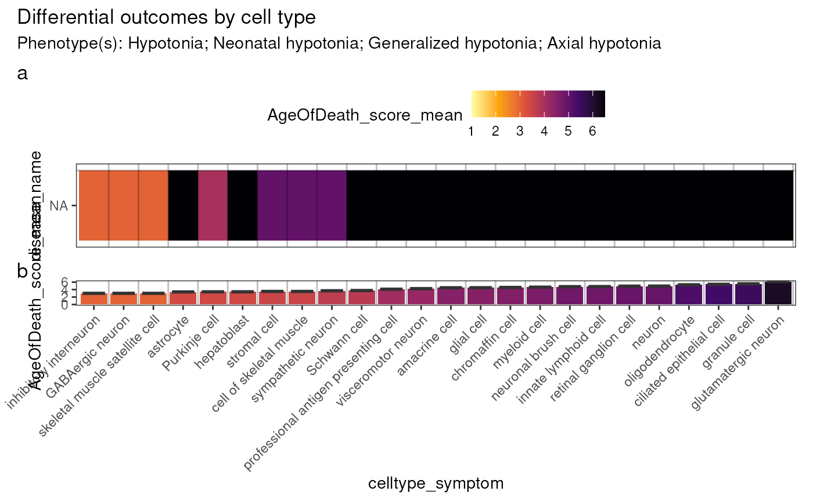

R/plot_differential_outcomes_heatmap.R
plot_differential_outcomes_heatmap.RdPlot differential outcomes: heatmap
plot_differential_outcomes_heatmap(
phenotypes = NULL,
results = load_example_results(),
celltype_col = "cl_name",
outcome_var = "AgeOfDeath_score_mean",
x_var = "celltype_symptom",
title = "Differential outcomes by cell type",
subtitle = paste0("Phenotype(s): ", paste(phenotypes, collapse = "; ")),
fill_limits = NULL,
print_phenotypes = TRUE,
show_plot = TRUE,
save_path = NULL,
height = NULL,
width = NULL,
...
)HPO phenotypes to include. Can be provided either as names (e.g. "Hypotonia") or HPO IDs (e.g. "HP:0001252").
The cell type-phenotype enrichment results generated by gen_results and merged together with merge_results
Name of the cell type column in the results.
Outcome variable to plot.
Variable to plot on the x-axis.
Title of the plot.
Subtitle of the plot.
Min/max limits for the fill scale.
Print the phenotypes in the subtitle.
Print the plot to the console.
Save the plot to a file.
Set to NULL to not save the plot.
Height of the saved plot.
Width of the saved plot.
Arguments passed on to add_symptom_results
annotLevelsThe annotation level to use within each CTD in
ctd_list.
keep_quantilesQuantiles to keep in each CellTypeDataset of the
ctd_list.
proportion_driver_genes_symptom_thresholdThe minimum proportion of overlap between symptom genes (genes annotated to a phenotype via a specific disease) and the driver genes (genes driving a signficant phenotype-cell type association).
drop_subthresholdDrop rows that don't meet the
proportion_driver_genes_symptom_threshold criterion.
top_nTop N genes to keep when grouping by group_vars.
ctd_listA named list of CellTypeDataset objects each created with generate_celltype_data.
q_thresholdThe q value threshold to subset the results by.
effect_thresholdThe minimum fold change in specific expression
to subset the results by.
phenotype_to_genesOutput of load_phenotype_to_genes mapping phenotypes to gene annotations.
results <- load_example_results()
keep_descendants <- "Hypotonia" # HP:0001252
results2 <- HPOExplorer::filter_descendants(results,
keep_descendants = keep_descendants)
#> Translating ontology terms to ids.
#> Keeping descendants of 1 term(s).
#> 14 terms remain after filtering.
#> 2,814 associations remain after filtering.
results2 <- HPOExplorer::add_death(results2,
allow.cartesian = TRUE,
agg_by = c("disease_id","hpo_id"))
#> Annotating phenos with AgeOfDeath.
#> Reading cached RDS file: phenotype_to_genes.txt
#> + Version: v2025-05-06
#> Adding genes and disease IDs.
out <- plot_differential_outcomes_heatmap(results=results2)
#> Adding symptom-level results.
#> Reading cached RDS file: phenotype_to_genes.txt
#> + Version: v2025-05-06
#> Subsetting results by q_threshold and effect.
#> 75,149 associations remain after filtering.
#> Mapping cell types to cell ontology terms.
#> Adding stage information.
#> Reading cached RDS file: phenotype_to_genes.txt
#> + Version: v2025-05-06
#> Loading ctd_DescartesHuman.rds
#> Loading ctd_HumanCellLandscape.rds
